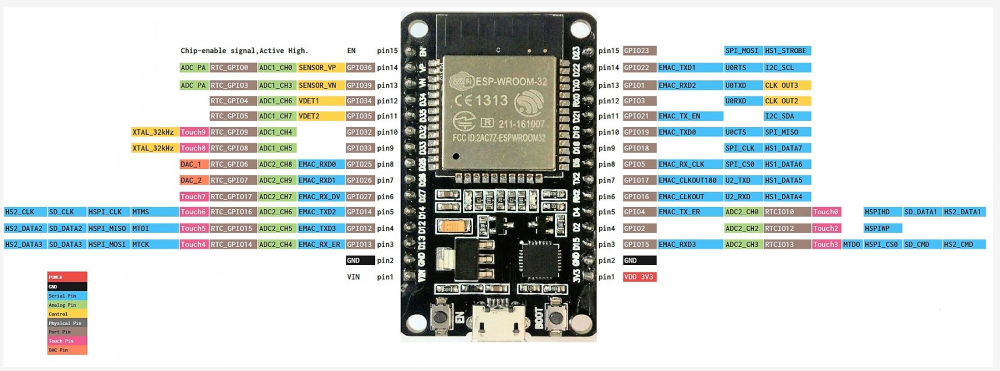

소스: LilyGO T-Display-S3 examples 저장소
(examples/DotMatrixScroll/, 로컬 전용) — 문서만 별도의 public 문서 사이트로 발행합니다.
일반 ESP32 WROOM DevKit으로 MAX7219 8x8 도트 매트릭스 4개 직렬연결 모듈(32x8 픽셀)을 구동하는 예제. Wi-Fi/NTP로 시간을 동기화해 커스텀 텍스트·날짜·시간을 순서대로 스크롤하며, 날짜와 시간 화면은 각각 다 들어온 뒤 3초간 멈춥니다. T-Display-S3 보드 자체나 내장 화면은 사용하지 않습니다.
모듈 입력(IN)측 5핀만 연결합니다. 4개의 매트릭스는 모듈 내부에서 이미 데이지체인으로 연결되어 있습니다.
| MAX7219 모듈 핀 | ESP32 WROOM 핀 | 비고 |
|---|---|---|
| VCC | 5V (VIN) | 텍스트가 어둡거나 깜빡이면 별도 5V 전원 권장 — 4개 모듈 풀밝기 시 최대 ~1A |
| GND | GND | 별도 전원을 쓰더라도 ESP32 GND와 반드시 공통 |
| DIN | GPIO23 | Data in (하드웨어 VSPI의 SPI_MOSI 핀) |
| CS (LOAD) | GPIO5 | Chip select / load (VSPI의 SPI_CS0 핀) |
| CLK | GPIO18 | Clock (VSPI의 SPI_CLK 핀) |
ESP32 WROOM MAX7219 4x8x8 module
┌────────────┐ ┌──────────────────────────┐
│ 5V/VIN├───────────┤ VCC │
│ GND ├───────────┤ GND IN OUT │
│ GPIO23 ├───────────┤ DIN [64 LEDs total] │
│ GPIO5 ├───────────┤ CS │
│ GPIO18 ├───────────┤ CLK │
└────────────┘ └──────────────────────────┘FC16_HW 타입이 아닐 수 있으니
소스의 HARDWARE_TYPE을 PAROLA_HW 또는 GENERIC_HW로 바꿔보세요.

WiFiManager로 Wi-Fi에 연결하며, 저장된 정보가 없으면 무한 대기 대신 설정용 AP를 엽니다.pool.ntp.org, KST = UTC+9, DST 없음)로 시간을 동기화합니다.customMessage) — 짧게 정지 후 다음으로MM/DD(요일) 형식, 스크롤 시작 직전 매번 갱신, 다 들어온 뒤 3초 정지HH:MM:SS 형식, 스크롤 시작 직전 매번 갱신, 다 들어온 뒤 3초 정지ESP32-DotMatrix(비밀번호 12345678)라는 설정용 AP를 엽니다.192.168.4.1 접속),
거기서 Wi-Fi 네트워크를 선택합니다.platformio.ini의 [env:DotMatrixScroll]에 선언:
majicdesigns/MD_Parola — 스크롤 텍스트 애니메이션majicdesigns/MD_MAX72XX — MAX7219 드라이버tzapu/WiFiManager — 캡티브 포털 방식 Wi-Fi 설정pio run -e DotMatrixScroll -t upload또는 VS Code에서 PlatformIO 사이드바 → DotMatrixScroll 환경 선택 → Upload.
platformio.ini의 [platformio] default_envs가 DotMatrixScroll로 설정되어 있습니다.
customMessage 수정setup()의 display.setIntensity(3), 범위 0~15SCROLL_SPEED(칸당 ms, 작을수록 빠름), SCROLL_PAUSE_MS(메시지 화면 뒤 정지시간), DATE_TIME_PAUSE_MS(날짜/시간 화면 뒤 정지시간, 기본 3000ms)configTime(9 * 3600, 0, ...)가 KST(UTC+9) 기준 — 다른 시간대는 오프셋 값을 변경